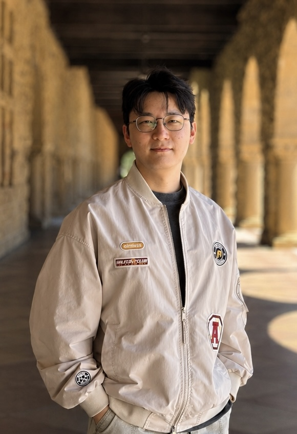

Changyu Chen
Postdoctoral Researcher, Stanford
Advisor: Diyi Yang
Previously, I completed my PhD in Computer Science at SMU , advised by Pradeep Varakantham and Arunesh Sinha. Before that, I received my master's degree from NTU and my bachelor's degree from Zhejiang University.
Find me on X, Google Scholar, LinkedIn, and Github.
Email: chency@stanford.edu
Research
My research focuses on building AI that learns from its own experience via reinforcement learning. I am currently interested in bringing RL to human-AI collaboration and collaborative agent systems.
Please refer to publications for the full list of my research papers.